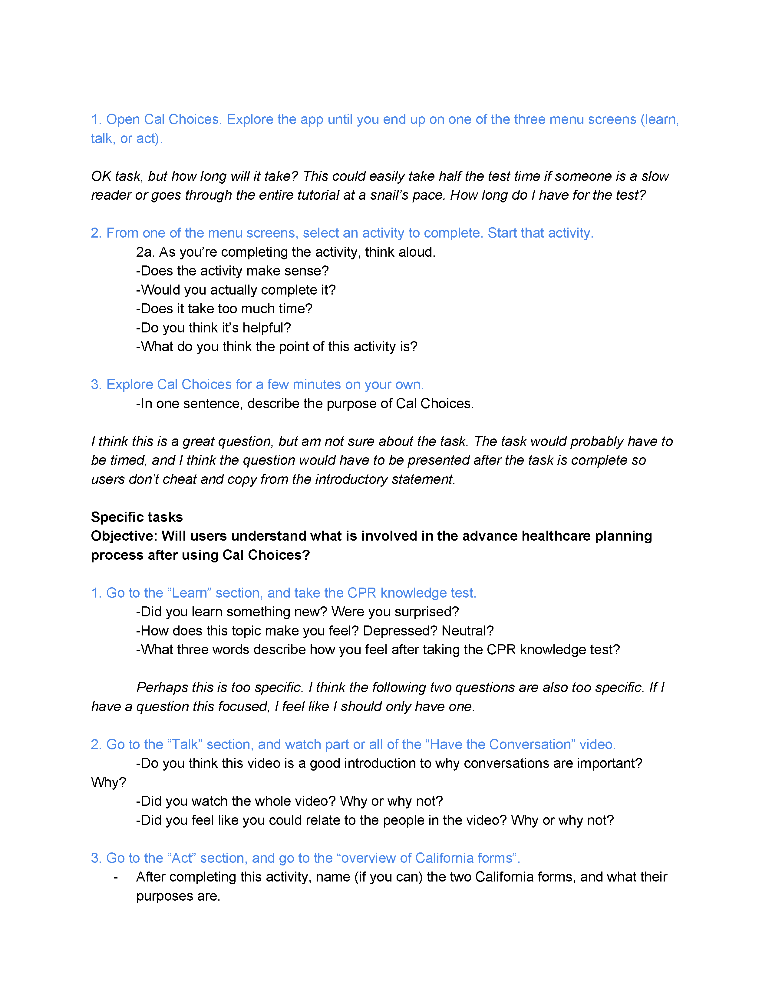
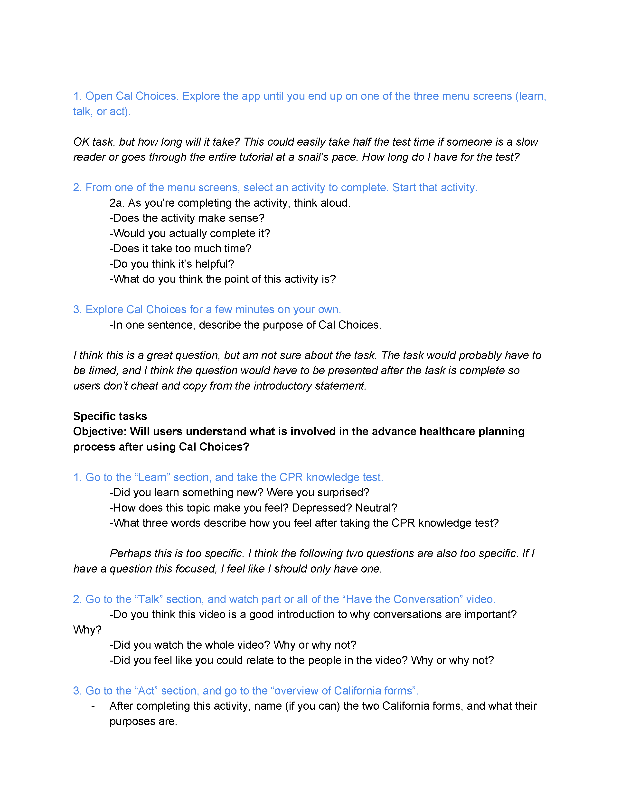

Audience Test Plan
Below are exercises completed after reading UserTesting.com's "A Complete Guide to User Testing Your Next Project",
reading chapters 1 through 5 of the "Handbook of Usability Testing", and considering techniques from "The UX Book".
 
